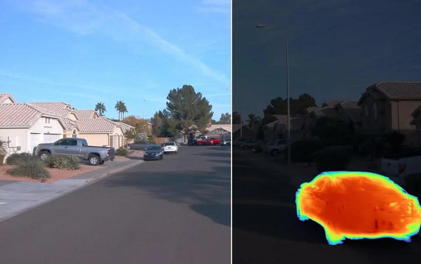
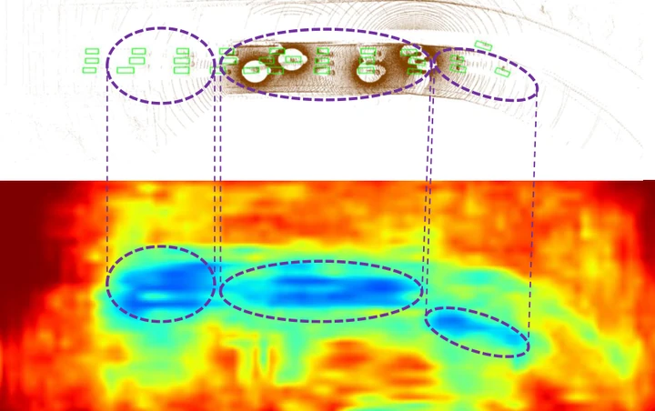
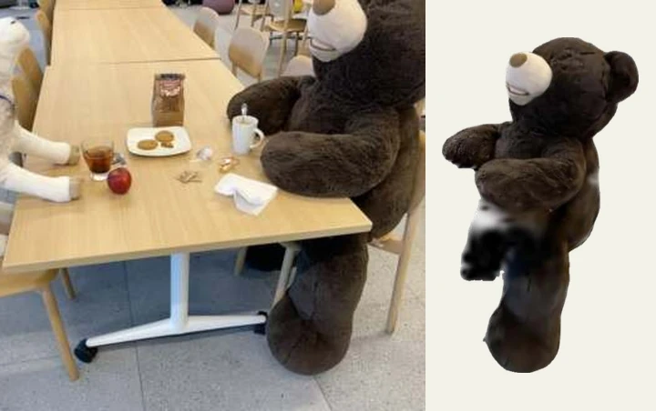

CoSAG: Compact Semantic Anchor Gaussians via Training-Free Rate-Distortion Coding
让邻近高斯共享空间锚点的语义特征。在论文评测的数据集上，语义场的存储开销降至 LangSplatV2 的 1/37 至 1/76。
北京大学深圳研究生院计算机科学与技术 · 直博在读
我关心机器如何从观测中理解三维世界，再利用这种理解规划下一步行动。我的研究方向包括三维视觉、自动驾驶和世界动作模型（World Action Models）。

让邻近高斯共享空间锚点的语义特征。在论文评测的数据集上，语义场的存储开销降至 LangSplatV2 的 1/37 至 1/76。

多车协作时，哪些位置的感知信息值得信任？CoDS 估计局部可靠性，联合完成三维检测与鸟瞰图分割。

随着视频逐帧输入，EA3D 在线重建三维场景，让用户在重建过程中就能选中并提取单个物体。

研究实习生
参与 EA3D，研究流式视频中的在线三维重建与语义物体提取。
研究实习生
研究驾驶世界模型，联合建模场景几何、视频预测与轨迹规划。
计算机科学与技术 · 直博在读

软件工程 · 工学学士
信息与软件工程学院